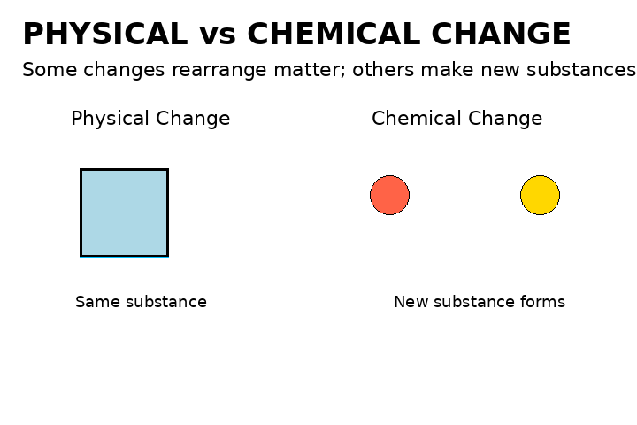

Fluids
Viscosity, density, buoyancy, pressure, and fluid systems.
Prepare for high-school science with systems, fluids, cells, and energy.

Viscosity, density, buoyancy, pressure, and fluid systems.

Cell structures, functions, tissues, organs, and systems.

Mechanical systems, input/output forces, work, efficiency, and system design.
Watersheds, water quality, climate connections, and human impacts.

Physical vs chemical changes, atoms, compounds, and simple reaction models.